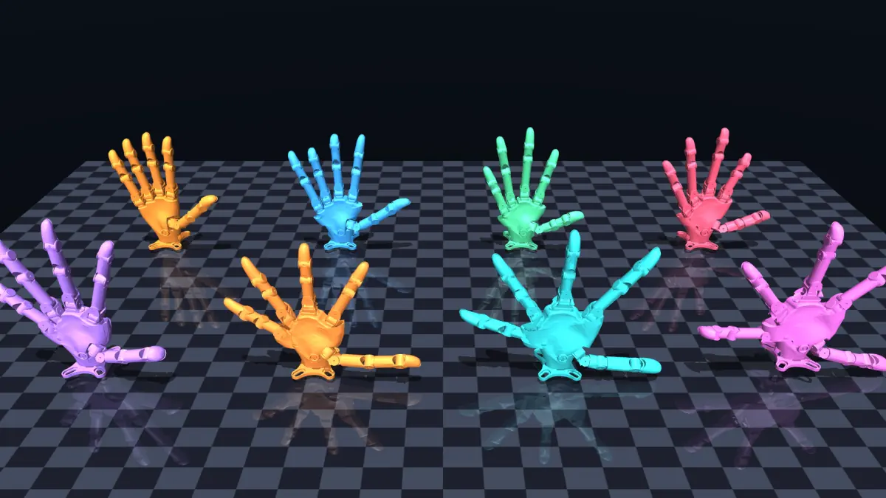
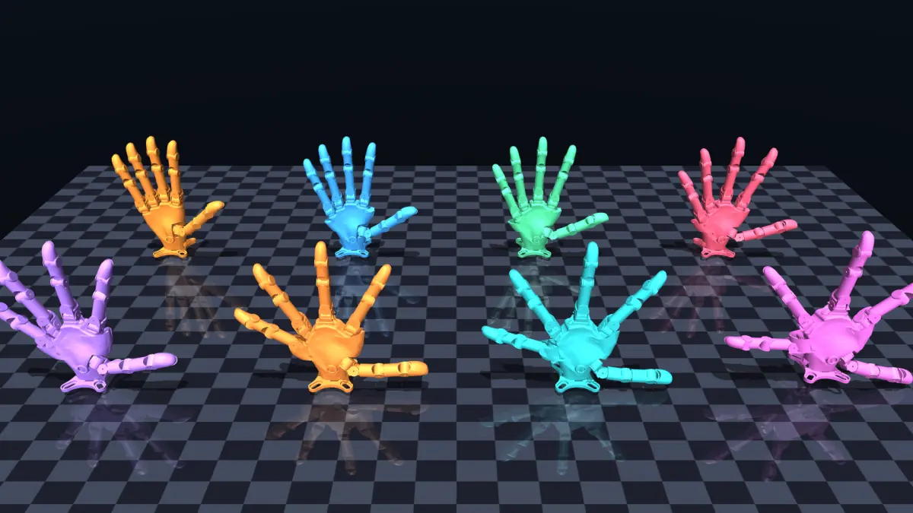
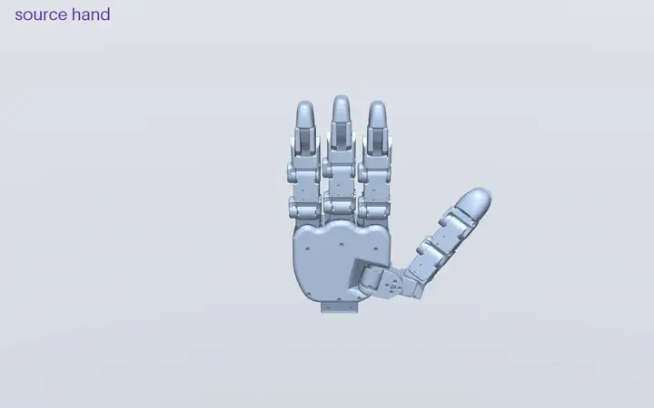
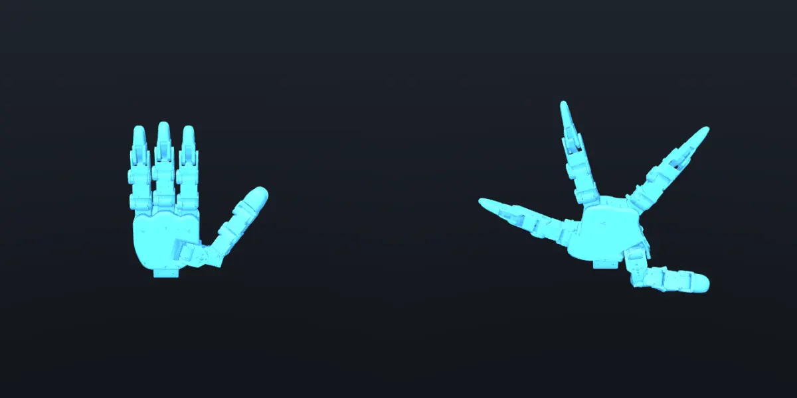

[Component One]
[Explain the first stage of the system and its input/output.]
Explore the embodiments
Explore a model. Drag to rotate. Move a joint.
[Conference / Journal · Year]
1[Institution One] 2[Institution Two]
assets/videos/teaser/
[One-sentence teaser caption describing the core contribution.]
[Write the project abstract here. Introduce the problem, explain why it matters, summarize the proposed system, and conclude with the main experimental finding. Keep this paragraph concise enough to scan on a project page.]
01
Approach
assets/images/
[Explain the first stage of the system and its input/output.]
[Explain the second stage and the key technical insight.]
[Explain how the complete system is trained or evaluated.]
02
Embodiment Design
Morphology samples generated around the Wuji and Midas robot hands, exploring structured variations in palm geometry, finger proportions, and radial layout. Select any result to view it at full resolution.

View full resolutionEight generated candidates spanning changes in finger placement, scale, and palm structure.

View full resolutionA palm-centered sweep showing eight structurally distinct hand designs.

View full resolutionA smooth random walk through the manufacturing-constrained space: radial palm layout and shared finger lengths and widths.

View full resolutionThe source design alongside an extreme sample from the radial transformation direction.
03
Qualitative Results
Successful MANO training rollouts on 145 reviewed clips from seven datasets (ARCTIC with both hands, joint error below 0.4 rad; DexterHand held in the air, within 3 cm and 0.8 rad of the demonstration; DexCanvas grasp-lift-place clips chosen for uncommon grasp types and objects), replayed in Isaac Sim from the captured training states. Scroll to browse; videos load only after you click a thumbnail.
04
Evaluation
@inproceedings{dexcodesign2026,
title = {[Full Paper Title]},
author = {[Author One] and [Author Two] and [Author Three]},
booktitle = {[Conference or Journal]},
year = {2026},
url = {https://dexcodesign.github.io}
}